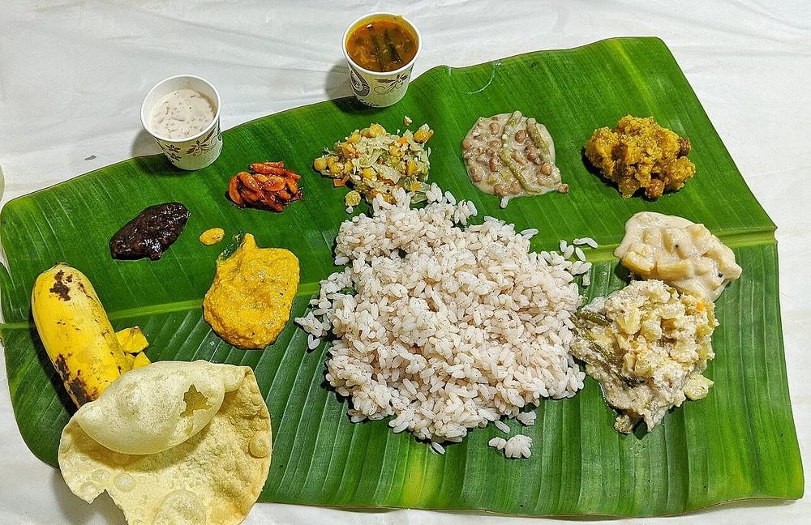

Malabar coast
Kerala Cuisine
The coastline that drew Rome, Arabia, China, and Europe in search of a single spice, built around coconut and a religious diversity few other regions can match.
The coastline that drew Rome, Arabia, China, and Europe in search of a single spice, built around coconut and a religious diversity few other regions can match.
Kerala's food history starts with a fact that's easy to underrate. For close to two thousand years, the Malabar Coast was the world's main source of black pepper, valuable enough to draw Roman traders, Arab merchants, and Chinese fleets to the same stretch of coastline long before the Mughals ever set foot in India. That trade reached its best-known turning point in 1498, when Vasco da Gama landed at Kozhikode (Calicut) in search of pepper1. His voyage opened a direct European sea route to India, and with it over a century of Portuguese and later Dutch and British competition for the spice trade. Kerala did more than take part in that history. For a very long time, it was the reason for it.
Centuries of trade left Kerala with a religious and culinary diversity that's unusual even within India. Kochi has hosted a Jewish community since roughly the time of the spice trade's earliest centuries. Arab traders left behind the Mappila Muslim community of the Malabar coast, whose Thalassery biryani, built on the small-grained khyma rice, is genuinely distinct from both the Hyderabadi and Awadhi versions. And Kerala's Syrian Christian community, tracing its roots to some of the oldest Christian communities outside the Middle East, contributes rich, dark meat dishes like duck roast and beef fry that sit alongside an otherwise heavily vegetarian Hindu tradition.
Where Punjabi or Awadhi cooking runs on ghee and dairy, Kerala's kitchens run on coconut in nearly every form at once. Coconut oil handles the frying and tempering, thick coconut milk finishes a curry, and fresh grated coconut goes straight into chutneys and vegetable dishes. It suits a tropical, coastal climate, and it is the single clearest thing separating Kerala's cooking from its northern neighbors and even from much of the rest of South India.
Kerala is one of the few Indian states, alongside Goa and the Northeast, where beef is commonly and openly eaten, mostly among its large Christian and Muslim communities. That makes the sadya, Kerala's traditional festival feast, a striking contrast. It is an entirely vegetarian meal of around twenty to twenty-six dishes, served in a fixed arrangement on a banana leaf and eaten by hand. Onam and other major celebrations require it, whatever a household eats the rest of the year. The sadya works as a piece of shared choreography, right down to the order in which dishes are mixed into the rice.



Ada PradhamanAppam
Avial
 Beef Ularthiyathu
Beef Ularthiyathu
 Cabbage Thoran
Cabbage Thoran
 Cheera Thoran
Cheera Thoran
 Chemmeen Manga Curry
Chemmeen Manga Curry
 Duck Mappas
Duck Mappas
 Fish Molee
Fish Molee
 Kaalan
Kaalan
 Kadala Curry
Kadala Curry
 Kappa and Meen Curry
Kappa and Meen Curry
 Karimeen Pollichathu
Karimeen Pollichathu
 Kerala Idiyappam
Kerala Meen Curry
Kerala Idiyappam
Kerala Meen Curry
 Koottu Curry
Koottu Curry
 Kozhi Porichathu
Kozhi Porichathu
 Kozhukatta
Kozhukatta
 Malabar Parotta
Malabar Parotta
 Meen Varuthathu
Meen Varuthathu
 Mutta Roast
Mutta Roast
 Nadan Chicken Stew
Nadan Chicken Stew
 Nadan Mutton Curry
Nadan Mutton Curry
 Neyyappam
Neyyappam
 Olan
Olan
 Parippu Curry
Parippu Curry
 Pazham Pori
Pazham Pori
 Pulissery
Pulissery
 Pumpkin Erissery
Pumpkin Erissery
 Puttu
Puttu
 Sambharam
Sambharam
 Semiya Payasam
Semiya Payasam
 Ulli Theeyal
Ulli Theeyal
 Unniyappam
Unniyappam
 Vegetable Korma
Vegetable Korma
Not cooking tonight?
Tell us what is in your kitchen, and Khaana will help you cook an authentic Indian meal.